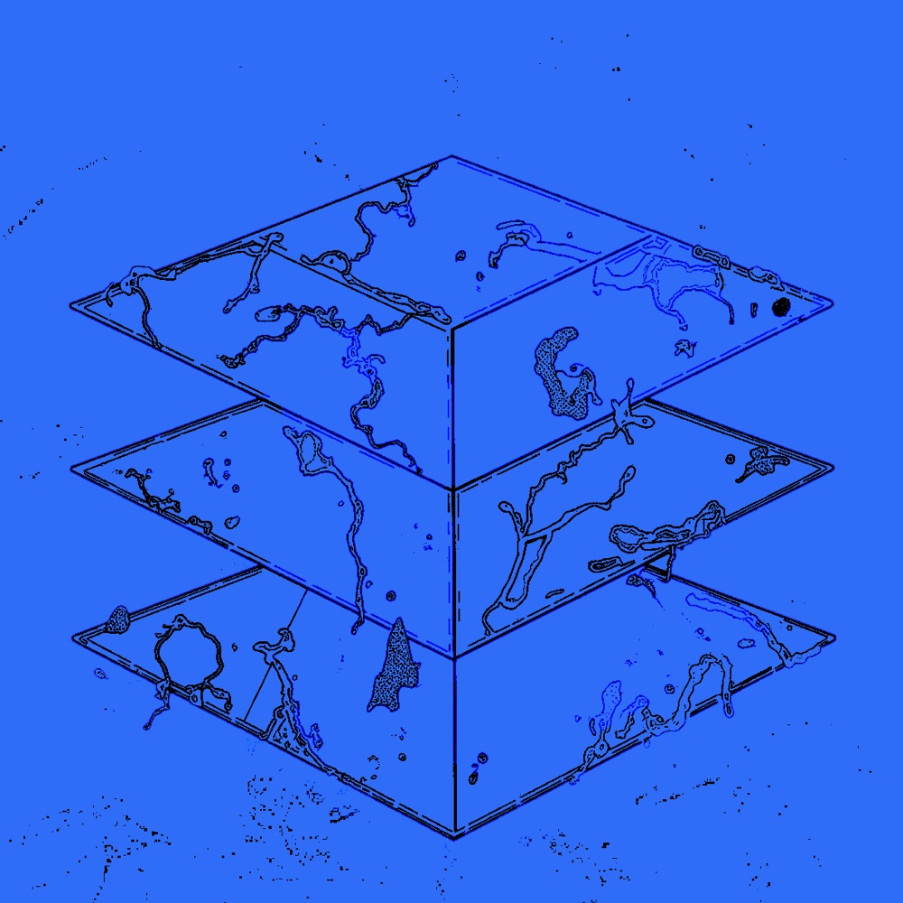
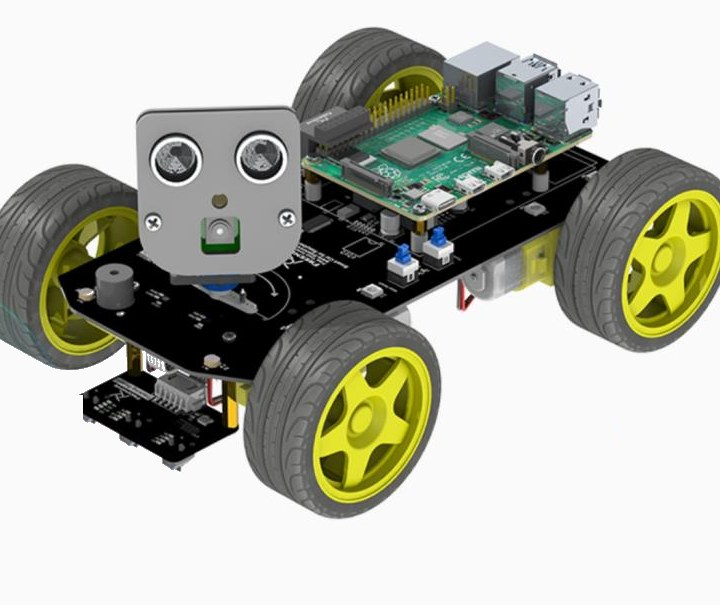
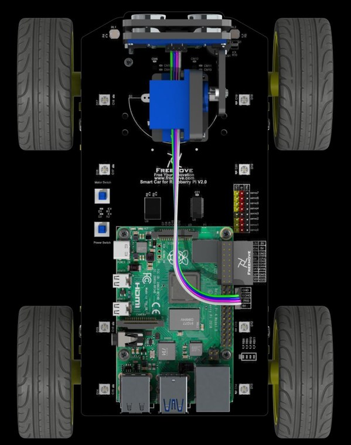
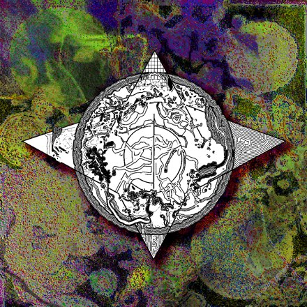
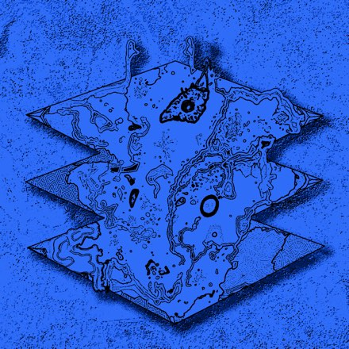
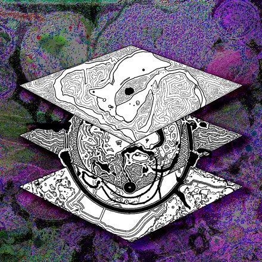
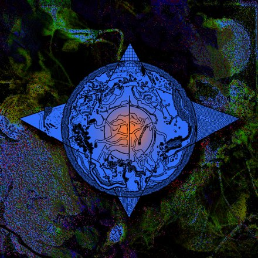

Go from a box of parts to a working robot with its own on-chain identity, discoverable on a public marketplace, and drivable from anywhere over MCP — the same open rails an AI agent would use.
Today, controlling a robot means the manufacturer's app, on the manufacturer's cloud, over a closed protocol. The machine you paid for answers to a company, not to you, and certainly not to any agent you might want to authorize.
The alternative is a robot that is a first-class citizen of an open stack. It carries its own identity on-chain. It is discoverable on a public marketplace. It is controllable by anyone, or any agent, that it authorizes, over rails nobody owns.
That frontier is young, under-tooled, and barely documented. Decentralized robot identity, on-chain robot marketplaces, and agent-addressable physical machines are all being invented right now. This workshop is the hands-on answer.

Four layers, touched by hand: identity, discovery, payment, control.
Your robot gets an address and a registered identity, so it can be named, authorized, and held accountable without a manufacturer vouching for it.
ERC-8004Publish the robot to a public marketplace, then find it again from the outside. This is the step that turns a private device into a discoverable service.
YakRover marketplaceMachine-payable access, so that use of a physical robot can be metered and settled over the same rails as anything else on the open web.
x402Drive the robot remotely through MCP, commanding a physical machine over exactly the interface an AI agent would reach for.
Model Context ProtocolBy the end you have a working robot you assembled, registered on-chain, listed on the marketplace, and remotely controlled, plus a working understanding of each layer solid enough to extend it.
Two sessions each day. Day one is the protocol; day two is your robot going into it. Async co-working runs on Discord throughout: assembly help, debugging, and sharing progress.
What YakRover is and why decentralized robotics, then a tour of the four layers: on-chain identity, marketplace discovery, payments, and MCP control.
Stand up the dev environment and get the control code running, so the stack is familiar and your machine is talking before day two.
A working session on the physical build: finish assembly, chase down the wiring and power problems that always surface, and get every robot in the room driving reliably.
Give the robot an on-chain identity and publish it, then find it on the marketplace and teleoperate it over MCP. Closes with a short clinic and the open problems in the stack.
Throughout An async channel on Discord runs alongside the sessions for assembly help, debugging, and comparing builds. Most hardware problems get solved there rather than in the live sessions.
This is a build workshop, so the hardware is yours. Order the parts once interest is confirmed, assemble ahead of the sessions, and arrive with a robot that already drives.


Either the 4WD Smart Car Kit or the Mecanum Wheel Car Kit; both work. Includes chassis, motors, servo, and camera. The Raspberry Pi is not included.
A Pi 4B with 2 GB is the comfortable target; 1 GB works if budget is tight. Buying a starter bundle is the simpler route: it includes the power supply and an SD card already imaged.
Only needed if you buy the Pi on its own rather than as a bundle. Flash Raspberry Pi OS before assembly; you can do it headless, with no separate screen.
The part most people get wrong. You need button-top, unprotected cells rated 10A or more discharge. Protected cells are physically longer and will not seat; low-current cells will not drive the motors.
A charger is required. The car's board does not charge the cells over USB, so they come out of the robot to charge. Freenove: "almost any charger suitable for 18650 batteries can be used."
Judge the cell, not the shop. Genuine 18650s top out around 3600 mAh, so a listing advertising far more is not a real cell. A named manufacturer — Samsung, Panasonic, LG, Sony — is the easiest way to be sure.
Charge the batteries before you start assembling. Freenove note that assembling with the wrong or uncharged cells can cause installation errors and damage the servos, so it is worth doing in that order.
Prices are indicative and move around; check current listings before ordering. Exact part numbers are confirmed by email before anyone is asked to buy anything.
Tell us you're in and that you're ready to buy the hardware. We confirm the exact part list and the schedule by email.
Shipping is the long pole, so order as early as you can. Batteries in particular are often a separate delivery.
Follow Freenove's step-by-step assembly guide. Budget an unhurried afternoon; the Discord channel is open the whole time.
Confirm the robot drives, steers, and streams video on the stock stack. This proves the hardware before any protocol work touches it.
Pull the control repo, connect the robot to your computer, and let Claude Code (or your agent of choice) bring it up to date. You arrive at session one with a machine that already answers.
Freenove's own seven-part walkthrough, in build order. Expand any one to play it here.
Videos by Freenove · open the full playlist on YouTube →
Nothing loads from YouTube until you press play.
Deliberately interdisciplinary: protocol and crypto people who have never driven a robot, and roboticists who have never touched on-chain identity. The cross-pollination is the point: neither group has the whole stack, and the gap between them is where the interesting problems are.
A programming background will help. You do not need prior robotics or blockchain experience, but you should be comfortable working in a terminal and reading unfamiliar code.
A new special interest group working at the intersection of AI agents, blockchains, and robotics. Protocols are engineered arguments: the group argues about robot coordination protocols, then engineers to test them on real hardware. About the group →
Anuraj has built hardware and software professionally for around fifteen years, and has been exploring blockchain for robotics since 2021. In 2024 he built the first crypto robot operated over a decentralized social network, with crypto payment gates. He designed several of the core layers of the YakRover protocol stack.
Rafa is Director of the ZKsync Association, where he architected and deployed ZKsync's governance smart-contract system, live since 2024. He was a core researcher in the Summer of Protocols, and architected the marketplace protocol in the YakRover stack.

The yakrover protocol work, in the open. GitHub →

The identity layer the robot registers into. Read the spec →

Step-by-step assembly for the car kit. Docs →

New Nature · Sep 21–25 · online. Details →
Registration for the Symposium itself runs centrally through the organizers. This form is how we size the workshop and get the hardware list to you early enough that you can order and build your own kit in time.
Nothing here is a payment or a binding commitment; it is a signal that you intend to buy the kit yourself.
Two minutes. Tells us who's committing, what you're bringing, and where to send the kit list.
Open the interest form →Opens in a new tab. Prefer email? Write to team@protocol-institute.org.